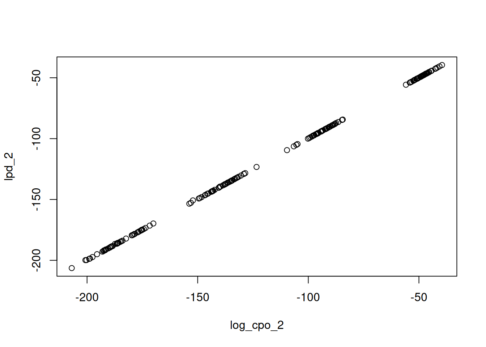

HS.model <- "
visual =~ x1 + x2 + x3
textual =~ x4 + x5 + x6
speed =~ x7 + x8 + x9
"
fit <- acfa(HS.model, HolzingerSwineford1939, meanstructure = TRUE,
verbose = FALSE)
(res <- loo(fit))
#> ── Leave-one-subject-out ───────────────────────── 301 subjects, second-order ──
#>
#> Estimate SE
#> elpd_loo -3769.2 43.0
#> p_loo 32.6 2.2
#> looic 7538.3 86.0
#>
#> ── Curvature check ─────────────────────────────────────────────────────────────
#>
#> first-to-second-order gap 15.5
#> pD/2 (trace) 14.6
#> excess over pD/2 (trace) +6.1%
#>
#> ℹ The gap approaches pD/2 (trace) from above. A large excess says the
#> second-order expansion has not settled over the sample.Introduction
How well would my model predict new data? Leave-one-out (LOO) cross-validation answers this by holding out one unit at a time, refitting the model to the remaining data, and scoring the held-out unit under the refitted posterior. The total score is the expected log predictive density, which rewards models that predict well and automatically penalises overfitting, making it a natural criterion for comparing models.
Computed naively, LOO needs refits. MCMC-based packages such as blavaan avoid this by importance-sampling over posterior draws (Vehtari et al. 2017), but this still requires the full set of MCMC draws. INLAvaan instead exploits its Laplace machinery: loo() approximates each case-deletion posterior by a Taylor expansion around the full-data posterior summary, so the entire LOO is computed from a single fit, with no refitting and no sampling.
Two unit types are scored, resolved automatically from the model:
- LOSO (leave-one-subject-out): single-level models, one unit per row.
- LOCO (leave-one-cluster-out): two-level models, one unit per cluster – the relevant predictive question is “how well would the model predict a new cluster?”.
Technical details in brief
loo() computes everything from the fit’s Laplace summary . An exact identity turns each held-out predictive density into an expectation under the full-data posterior, evaluated in closed form by Taylor-expanding the unit’s log-likelihood about . With and the gradient and Hessian of there, the two orders are the second order additionally handing back the information the unit itself lent to the posterior. The headline elpd_loo is the sum of the second-order terms, with standard error ; looic , and p_loo (the loo package’s effective number of parameters, matching loo::loo()) comes from the analogous expansion of the pointwise predictive density.
Two checks, both free with the result, tell you whether to trust the expansion. The first is an existence condition and is enforced automatically: exists exactly when , equivalently when the unit’s leverage k_max (the largest eigenvalue of , reported in per_unit) stays below 1. A unit at or above 1 carries as much curvature as the whole posterior in some direction, so its true LOO term genuinely is extreme. In such cases, the whole result then reverts to first order, with a warning naming the units to inspect.
The second is a gap check, printed with every second-order result. The first- and second-order totals of a settled expansion differ by , approached from above, so the printout reports the gap, the reference (pd_trace, the trace form ), and the excess of one over the other. A large positive excess says the expansion has not settled over the sample. No threshold is applied, and the reading is left to the user, but in our validation the gap was always within a few elpd units of zero for well-behaved models.
A first example
We fit the classic three-factor CFA to the Holzinger–Swineford data.
The printout ends with the gap check described above. The pointwise contributions are available for inspection as well. E.g. a large score_norm or an unusually low log_cpo_2 flags a unit the model predicts poorly, and k_max is the unit’s leverage:
head(res$per_unit)
#> unit nobs l_star score_norm lpd_1 lpd_2 log_cpo_1 log_cpo_2
#> 1 1 1 -17.28684 6.635476 -17.17217 -17.21893 -17.40151 -17.45192
#> 2 2 1 -13.78478 5.434572 -13.70197 -13.77222 -13.86760 -13.94246
#> 3 3 1 -11.11607 3.794352 -11.08014 -11.17135 -11.15201 -11.24565
#> 4 4 1 -10.25394 2.583283 -10.23987 -10.28655 -10.26801 -10.31573
#> 5 5 1 -10.70222 2.973350 -10.68877 -10.73572 -10.71567 -10.76369
#> 6 6 1 -13.38440 5.003680 -13.32254 -13.41005 -13.44627 -13.53799
#> det_term k_max k_min k_sum k_ssq ok
#> 1 -0.04877800 0.03771003 -0.041158433 0.09406725 0.006957204 TRUE
#> 2 -0.07227935 0.05815722 -0.049561144 0.14011057 0.008783305 TRUE
#> 3 -0.09292559 0.04160895 -0.009708889 0.18341460 0.004783929 TRUE
#> 4 -0.04763963 0.02980145 -0.010455924 0.09422994 0.002071943 TRUE
#> 5 -0.04796120 0.03028302 -0.011319956 0.09484053 0.002135644 TRUE
#> 6 -0.08983577 0.06559532 -0.023306856 0.17549082 0.008120885 TRUEBecause elpd differences between models fitted to the same data are paired, their standard errors should be computed from the pointwise differences rather than the marginal SEs. compare(..., loo = TRUE) does this automatically:
one.factor <- "g =~ x1 + x2 + x3 + x4 + x5 + x6 + x7 + x8 + x9"
fit1f <- acfa(one.factor, HolzingerSwineford1939, meanstructure = TRUE,
verbose = FALSE)
#> Warning: Fit diagnostics flagged 1 potential issue:
#> ✖ The VB correction shifted `g=~x5` by 1.02 posterior SDs; the Gaussian
#> approximation at the mode may be inaccurate.
#> ℹ Inspect with `diagnostics(fit)` and `diagnostics(fit, type = "param")`.
compare(fit, fit1f, loo = TRUE)
#> Bayesian Model Comparison (INLAvaan)
#> Models ordered by ELPD (Taylor LOO, second-order)
#> elpd_diff/se_diff are paired differences vs the best model
#>
#> Model npar Marg.Loglik logBF DIC pD ELPD SE p_loo
#> fit 30 -3885.112 0.00 7534.429 29.288 -3769.163 42.996 32.597
#> fit1f 27 -3990.302 -105.19 7757.135 26.927 -3878.041 46.738 27.377
#> elpd_diff se_diff
#> 0.000 0.000
#> -108.878 17.009Models are sorted by descending elpd, and elpd_diff and se_diff are relative to the best model. A common heuristic is that a difference smaller than a couple of se_diff units is not practically meaningful (Vehtari et al. 2017). Here the three-factor model is preferred by a wide margin.
Two-level models
For models fitted with a cluster argument, loo() automatically switches to per-cluster scoring (LOCO). Here the covariates are modelled jointly (fixed.x = FALSE) though the default fixed.x = TRUE is also supported. See the practical considerations below for a discussion of the two flavours.
model2l <- "
level: 1
fw =~ y1 + y2 + y3
fw ~ x1 + x2 + x3
level: 2
fb =~ y1 + y2 + y3
fb ~ w1 + w2
"
fit2l <- asem(model2l, Demo.twolevel, cluster = "cluster",
meanstructure = TRUE, fixed.x = FALSE, verbose = FALSE)
(loco <- loo(fit2l)) # type = "loco" is automatic
#> ── Leave-one-cluster-out ───────────────────────── 200 clusters, second-order ──
#>
#> Estimate SE
#> elpd_loo -23344.2 731.4
#> p_loo 34.6 2.1
#> looic 46688.4 1462.9
#>
#> ── Curvature check ─────────────────────────────────────────────────────────────
#>
#> first-to-second-order gap 17.5
#> pD/2 (trace) 16.7
#> excess over pD/2 (trace) +4.3%
#>
#> ℹ The gap approaches pD/2 (trace) from above. A large excess says the
#> second-order expansion has not settled over the sample.With the per unit dataframe stored, we can perform additional diagnostics, such as to query the relationship between the second-order log predictive density and the second-order log CPO. A unit sitting above the diagonal in the plot below is one the full-data posterior flatters, since its in-sample density exceeds its held-out one. The vertical gap is exactly its contribution to p_loo.
plot(lpd_2 ~ log_cpo_2, loco$per_unit)
There is no need to score every unit each time. The units argument restricts the pass to a chosen subset, given as cluster positions for LOCO and case numbers for LOSO, and the reported totals then cover that subset alone. This is useful when a full pass is expensive, or to revisit the units the diagnostics above single out. Here we rescore the three worst-predicted clusters:
worst <- with(loco$per_unit, unit[order(log_cpo_2)][1:3])
loo(fit2l, units = worst)
#> ── Leave-one-cluster-out ─────────────────────────── 3 clusters, second-order ──
#>
#> Estimate SE
#> elpd_loo -607.9 6.4
#> p_loo 1.9 0.4
#> looic 1215.8 12.9
#>
#> ── Curvature check ─────────────────────────────────────────────────────────────
#>
#> first-to-second-order gap 0.5
#> pD/2 (trace) 0.5
#> excess over pD/2 (trace) +11.9%
#>
#> ℹ The gap approaches pD/2 (trace) from above. A large excess says the
#> second-order expansion has not settled over the sample.Storing the result with the fit
loo(fit) never modifies the fitted object – but under the default test = "standard", the fit itself already computes and stores both the full LOO and the WAIC whenever the model is supported, has a mean structure, and (for LOO) the predicted serial cost is within a 10-second budget. The prediction is calibrated at run time by timing a single score evaluation, so on typical single-level models – where the full LOO costs a fraction of the fit itself – you simply get loo(fit) and waic(fit) for free. The WAIC reuses the very draws the fit produced for its posterior summaries, so it costs only one casewise pass.
For expensive cases you can force the LOO regardless of the budget at fit time,
or store it afterwards with an explicit reassignment:
fit <- add_loo(fit)A stored result is returned instantly by loo(fit) and reused by fitmeasures() (where the blavaan-style names appear) and compare(..., loo = TRUE):
fitmeasures(fit, c("elpd_loo", "se_loo", "p_loo", "looic"))
#> elpd_loo p_loo looic se_loo
#> -3769.163 32.597 7538.327 85.992Scoring submodels without refitting
The theta and Omega arguments evaluate the LOO at an arbitrary Gaussian posterior summary instead of the fit’s own. Combined with Gaussian conditioning, this scores a constrained submodel from the encompassing fit alone. For example, to score the submodel with the visual ~~ speed covariance fixed to zero, condition the summary on that parameter and re-evaluate:
int <- get_inlavaan_internal(fit)
theta <- int$theta_star
Omega <- int$Sigma_theta
p <- which(names(coef(fit)) == "visual~~speed")
theta_c <- theta - Omega[, p] * (theta[p] / Omega[p, p])
Omega_c <- Omega - tcrossprod(Omega[, p]) / Omega[p, p]
loo(fit, theta = theta_c, Omega = Omega_c)
#> ── Leave-one-subject-out ───────────────────────── 301 subjects, second-order ──
#>
#> Estimate SE
#> elpd_loo -3786.3 45.0
#> p_loo 34.2 2.5
#> looic 7572.6 90.1
#>
#> ℹ Evaluated at a user-supplied (theta, Sigma) summary.
#>
#> ── Curvature check ─────────────────────────────────────────────────────────────
#>
#> first-to-second-order gap 16.4
#> pD/2 (trace) 15.4
#> excess over pD/2 (trace) +6.6%
#>
#> ℹ The gap approaches pD/2 (trace) from above. A large excess says the
#> second-order expansion has not settled over the sample.No refit took place: the conditioned summary has the covariance locked at zero (its row and column of Omega_c vanish), and the LOO machinery automatically restricts to the remaining parameters. This pair of arguments is the building block for custom model-search strategies – screen many candidate restrictions by conditioning, score each with loo(), and only refit the winners. INLAvaan deliberately provides just this evaluation API; the search logic is yours to design.
Practical considerations
-
Compare models at second order only (the default). The first-order score overstates the elpd by , which grows with model dimension; in our validation the second-order score tracks brute-force refits to within about one elpd unit, while first order can be off by tens.
compare()scores every model at one common order and states it. -
Joint and conditional scores never mix. With exogenous covariates the score follows the fitted likelihood: under
fixed.x = FALSEa unit is scored by the joint predictive density of its outcomes and covariates, while underfixed.x = TRUE(lavaan’s default) it is scored by the density of its outcomes given its covariates, the familiar regression cross-validation convention. The two estimate different quantities, socompare(..., loo = TRUE)refuses to put them in one table. Within the conditional flavour, models with different covariate sets are directly comparable as long as the outcomes match (the covariate-selection setting); joint scores require identical variable sets across models. -
Fit with
meanstructure = TRUE, otherwise absolute elpd values are biased (same-data comparisons remain valid either way). -
LOCO and LOSO answer different questions. On two-level fits the default
type = "loco"is the marginal predictive (a new cluster);type = "loso"scores the conditional one (a new row in an observed cluster) and warns, since the two are easily conflated (Merkle et al. 2019). - Missing data. FIML fits are scored on the observed entries, so two such fits are comparable only when they share the same data and the same holes; see the missing-data article.
-
Scope and cost. Supported are continuous-indicator
MLfits, single- or two-level, single-group or multigroup (not ordinal PML, not multigroup two-level). Parallelism is opt-in viacores, andunitsscores a subset.
References
Merkle, Edgar C., Daniel Furr, and Sophia Rabe-Hesketh. 2019. “Bayesian Comparison of Latent Variable Models: Conditional Versus Marginal Likelihoods.” Psychometrika 84 (3): 802–29. https://doi.org/10.1007/s11336-019-09679-0.
Vehtari, Aki, Andrew Gelman, and Jonah Gabry. 2017. “Practical Bayesian Model Evaluation Using Leave-One-Out Cross-Validation and WAIC.” Statistics and Computing 27 (5): 1413–32. https://doi.org/10.1007/s11222-016-9696-4.